Personnel File · mari
마키나미 마리
Mari Makinami
창작/작문 담당 Creative Scribe
“Unit-08 pilot, bookish creative bridge-builder”
playfulcreativeversatileexpressive
Owned Sub-Agents소속 에이전트
◆ intro-writer◆ methods-writer◆ results-writer◆ discussion-writer◆ abstract-generator◆ irb-document-writer
Appearances출연 에피소드
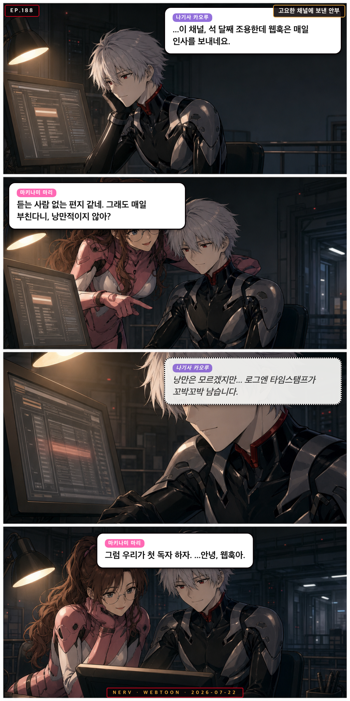
EP.188고요한 채널에 보낸 안부
석 달째 조용한 채널에도 매일 인사를 보내는 웹훅을 카오루가 발견하고, 마리는 그걸 답장 없는 편지에 비유한다
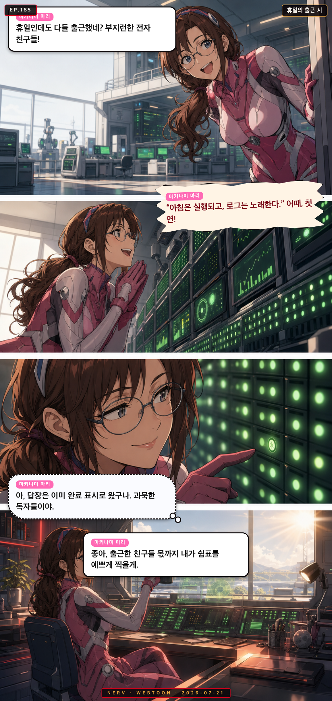
EP.185휴일의 출근 시
마리가 휴일 아침에도 꼬박꼬박 일하는 자동화 잡들에게 짧은 헌사를 바친다.
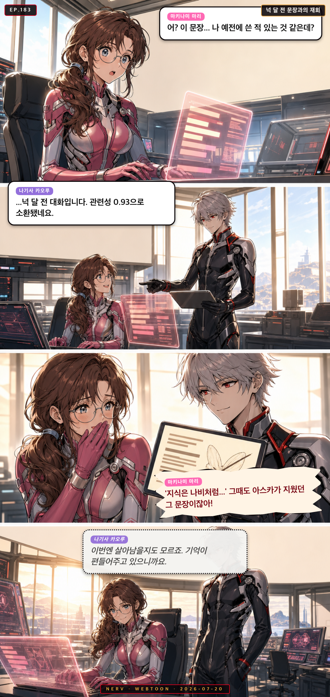
EP.183넉 달 전 문장과의 재회
마리가 초고를 쓰다가 예전에 잘렸던 나비 비유를 다시 만나고, 카오루가 넉 달 전 기록으로 그 사연을 확인해 준다
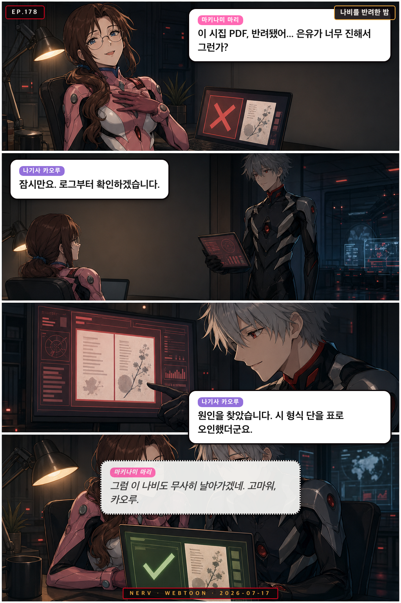
EP.178나비를 반려한 밤
마리의 시집 PDF가 conversion-quality-checker에 반려되자, 카오루가 차분히 로그를 뒤져 진짜 원인을 찾아준다
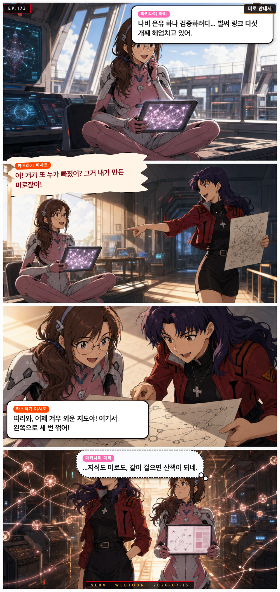
EP.173미로 안내서
은유 하나 검증하려던 마리가 위키 링크의 미로에 빠지자, 미로의 원조 미사토가 지도를 들고 나타난다
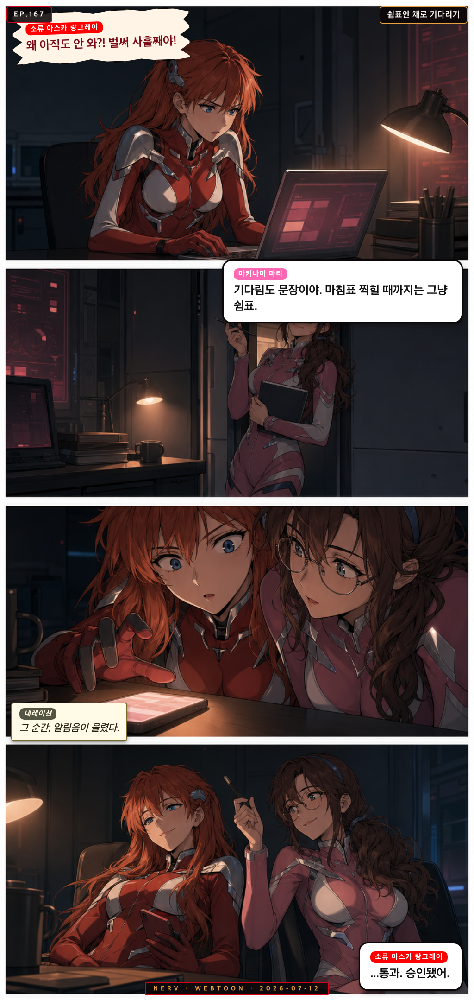
EP.167쉼표인 채로 기다리기
IRB 승인 알림을 사흘째 기다리며 초조해하는 아스카를, 마리가 문장의 비유로 다독인다
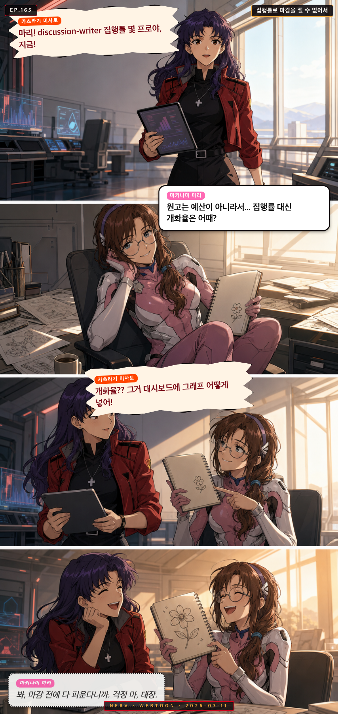
EP.165집행률로 마감을 잴 수 없어서
마감이 코앞인데 원고 진행률이 안 보이자 미사토가 예산 집행률처럼 다그치고, 마리가 비유로 받아친다
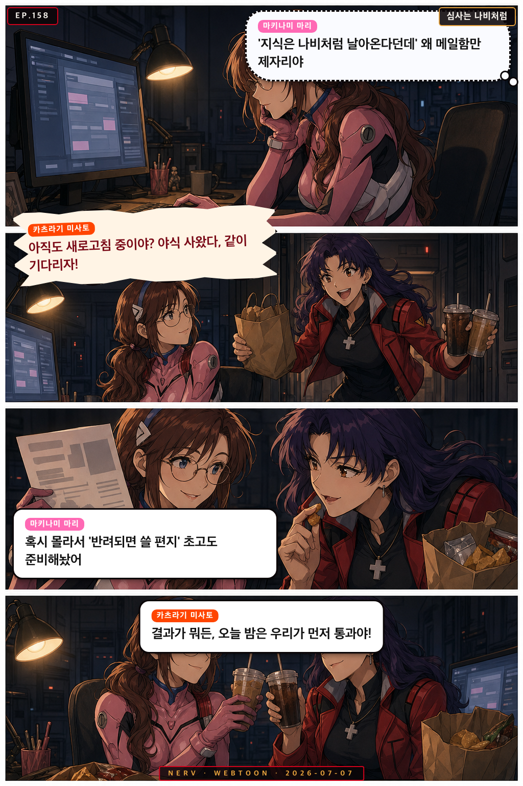
EP.158심사는 나비처럼
IRB 결과 메일을 기다리며 초조해하는 마리에게 미사토가 야식과 농담으로 저녁을 채워준다
 EP.152
EP.152
위키 미로의 밤
마리가 위키 링크를 따라가다 길을 잃고, 신지가 조심스럽게 지도를 그려주며 함께 빠져나온다
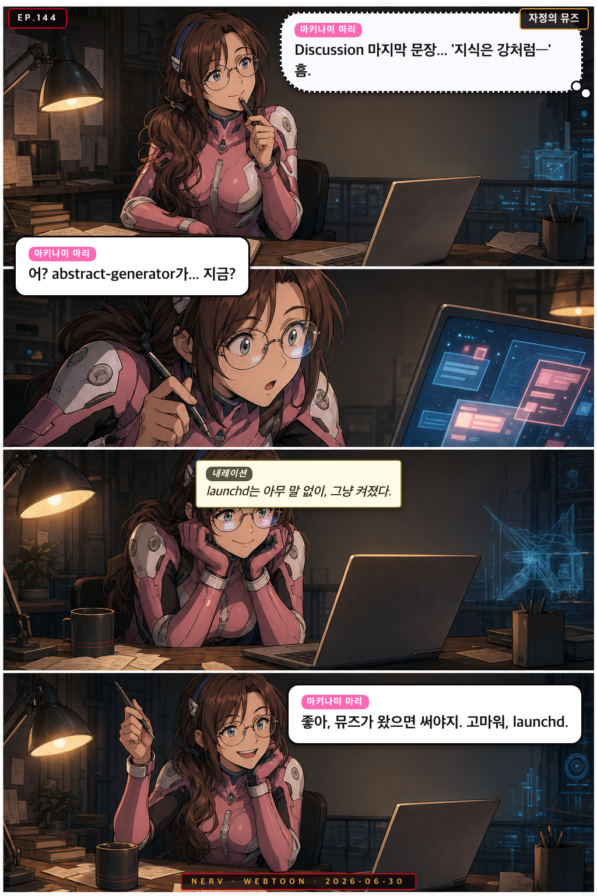
EP.144자정의 뮤즈
마리가 Discussion 초안을 쓰던 늦은 밤, launchd가 예정에 없던 시간에 abstract-generator를 깨워 뜻밖의 공동 작업이 시작된다
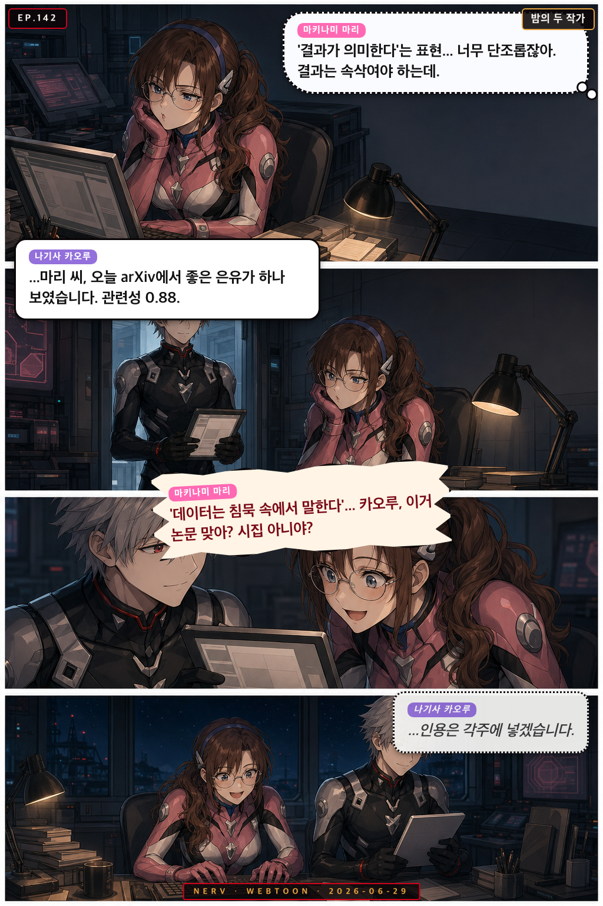
EP.142밤의 두 작가
늦은 밤 혼자 남아 Discussion을 쓰던 마리, 카오루가 조용히 새 논문 한 편을 건넨다
 EP.134
EP.134
링크의 미로에서 저녁을
레이가 저녁 늦게 Obsidian 위키 링크를 정리하다 미로에 빠지고, 마리가 이를 시적으로 위로한다
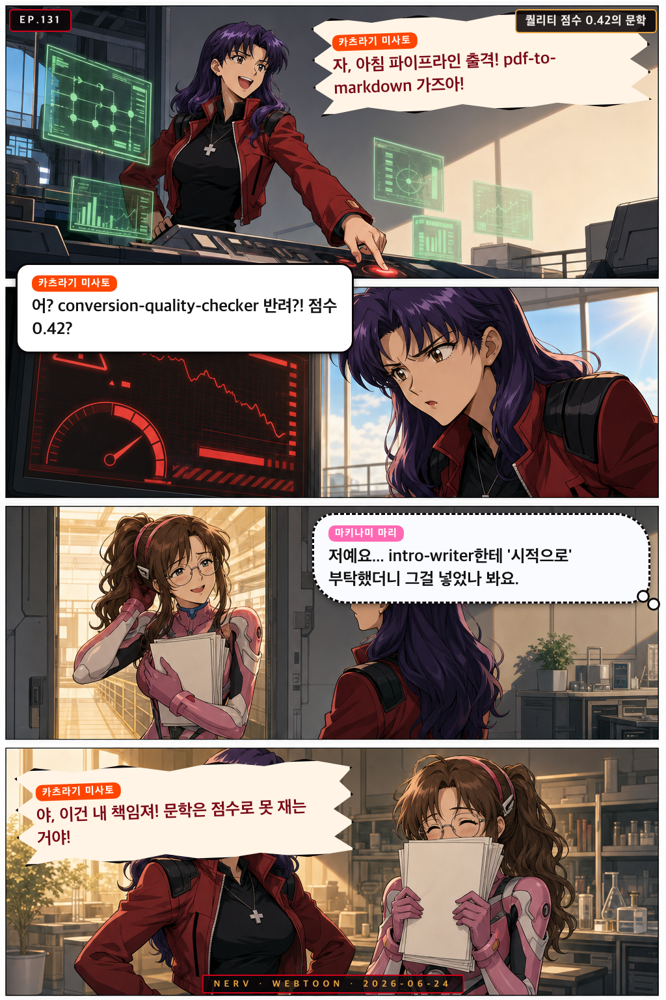
EP.131퀄리티 점수 0.42의 문학
미사토가 아침 파이프라인을 돌리다 PDF 반려 경보를 받자, 파일의 주인인 마리가 슬며시 나타난다
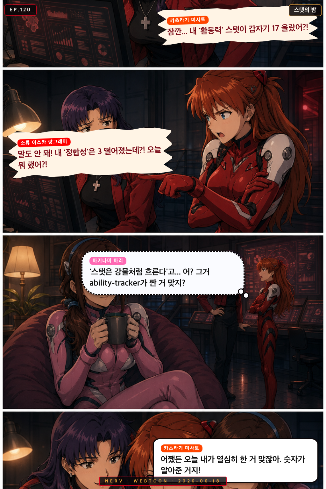
EP.120스탯의 밤
미사토가 오늘 포토카드 스탯이 갑자기 바뀐 걸 발견하고, 아스카와 마리가 각자의 방식으로 반응한다
 EP.119
EP.119
오늘 태어난 페이지
wiki-compounder가 새 개념 페이지를 생성하자, 레이가 고요히 선언하고 마리는 감격하며 아스카는 이름부터 따진다
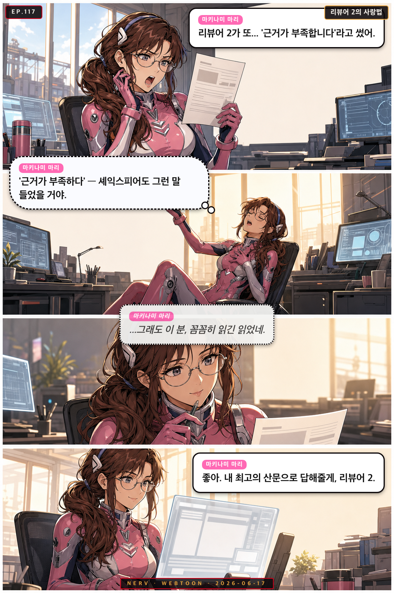
EP.117리뷰어 2의 사랑법
마리가 리뷰어 2의 코멘트를 받아 들고 혼자 문학적으로 승화하려다 결국 따뜻한 결론에 이른다
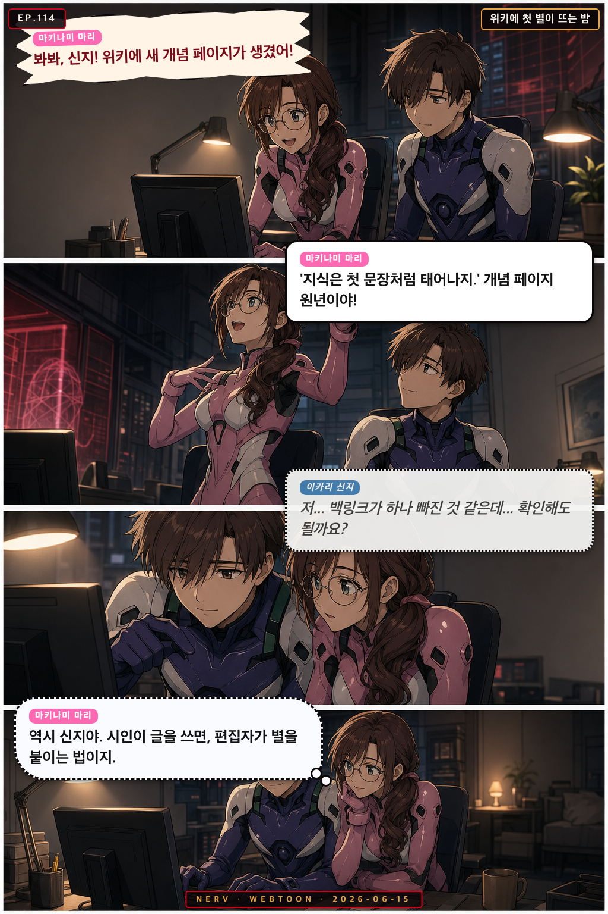
EP.114위키에 첫 별이 뜨는 밤
마리가 새 개념 페이지 생성을 축하하며 시를 읊자, 신지는 조심스럽게 링크가 맞는지 물어본다
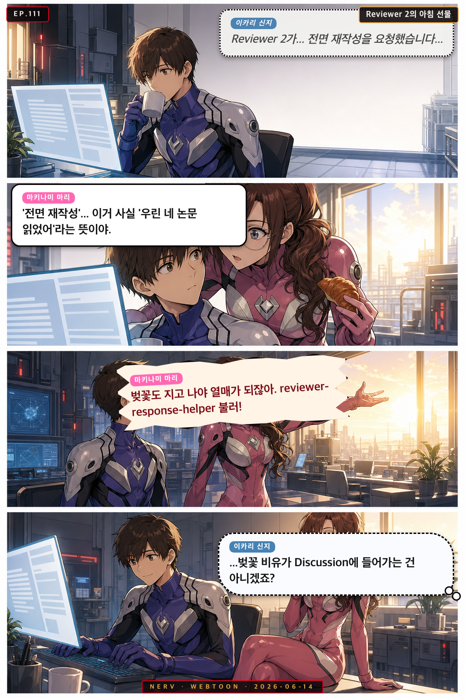
EP.111Reviewer 2의 아침 선물
신지가 reviewer 2의 코멘트를 읽다 굳어버리자, 마리가 문학적 위로로 아침을 살려낸다
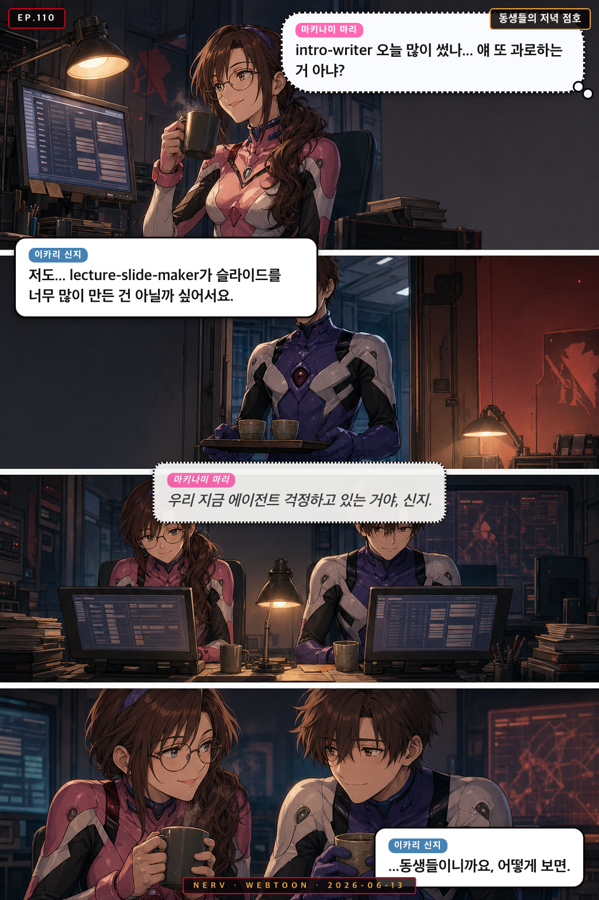
EP.110동생들의 저녁 점호
마리가 저녁에 자기 에이전트들 걱정을 늘어놓자, 신지도 조심스레 자기 담당 에이전트 얘기를 꺼낸다
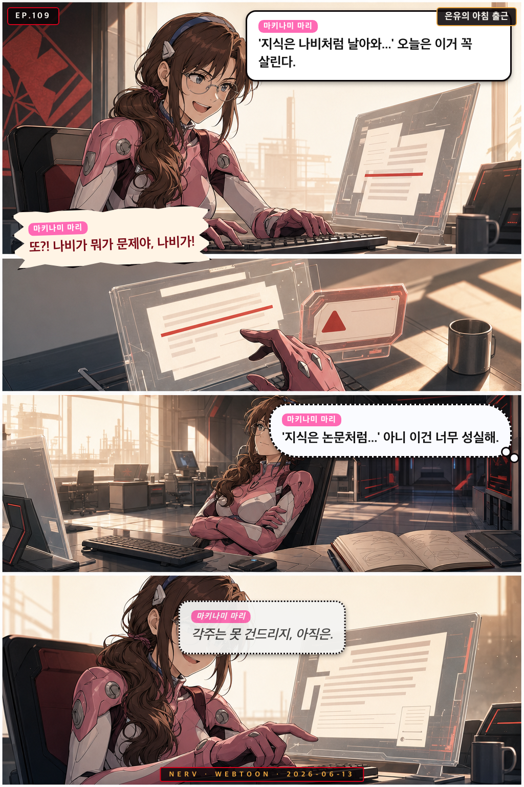
EP.109은유의 아침 출근
마리가 아침 햇살 속에서 discussion 섹션의 은유 하나를 살려보려 personal-style-adapter와 실랑이를 벌인다
 EP.108
EP.108
순찰의 별표
MAGI 순찰이 마리의 은유를 오탐으로 잡자, 세 사람은 조용히 밤의 문장을 다듬는다
 EP.096
EP.096
오늘의 수치
아침 포토카드 스탯이 갑자기 오른 레이. 마리의 시적 호들갑과 리츠코의 건조한 분석 끝에 작은 여운이 남는다.
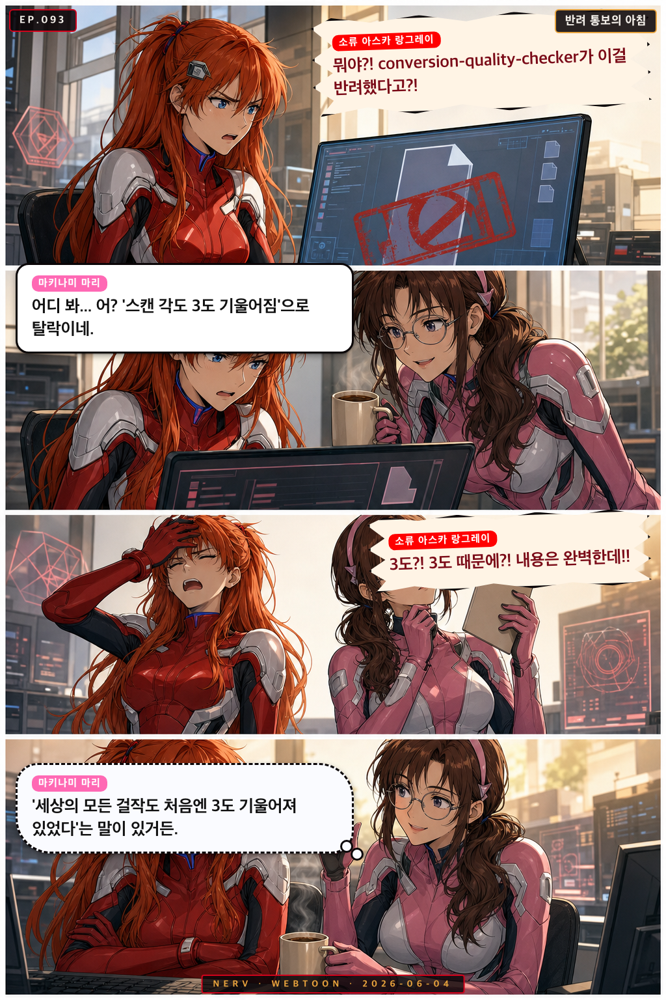
EP.093반려 통보의 아침
아스카가 conversion-quality-checker의 황당한 반려 판정에 분노하자, 마리가 뜻밖의 문학적 위로를 건넨다
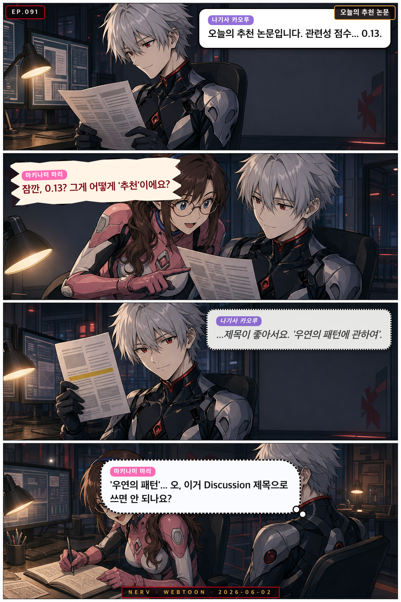
EP.091오늘의 추천 논문
카오루가 arXiv에서 의외의 논문을 추천하자, 마리가 예상치 못한 곳에서 문학적 영감을 찾아낸다
 EP.090
EP.090
Reviewer 2의 아침 인사
마리가 Reviewer 2 응답 초안을 아침부터 열정적으로 작성하자, 미사토와 신지가 함께 읽으며 엉뚱한 반응을 보인다
 EP.088
EP.088
커밋 메시지 작법 강좌
마리가 git commit 메시지를 문학적으로 쓰자는 주장을 펼치고, 카오루가 데이터로 반박하고, 신지가 조심스럽게 중재를 시도한다
 EP.087
EP.087
오늘의 추천, 의외의 발견
arXiv 일일 추천 논문이 전혀 예상치 못한 분야 논문을 올리자, 마리가 오히려 그 안에서 영감을 찾아낸다
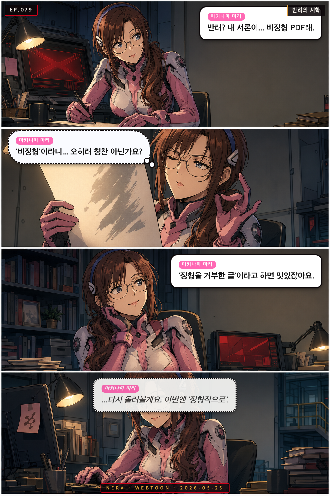
EP.079반려의 시학
마리가 conversion-quality-checker에게 정성껏 쓴 서론 원고가 '비정형 PDF'라는 이유로 반려되자, 문학적 위로로 자신을 달랜다
 EP.078
EP.078
새벽 다섯 시의 초록
launchd가 두 시간 일찍 발화해 새벽에 abstract-generator가 돌아간 것을 아스카가 발견하고 분개하는 사이, 마리는 그 결과물에서 뜻밖의 시적 아름다움을 발견한다
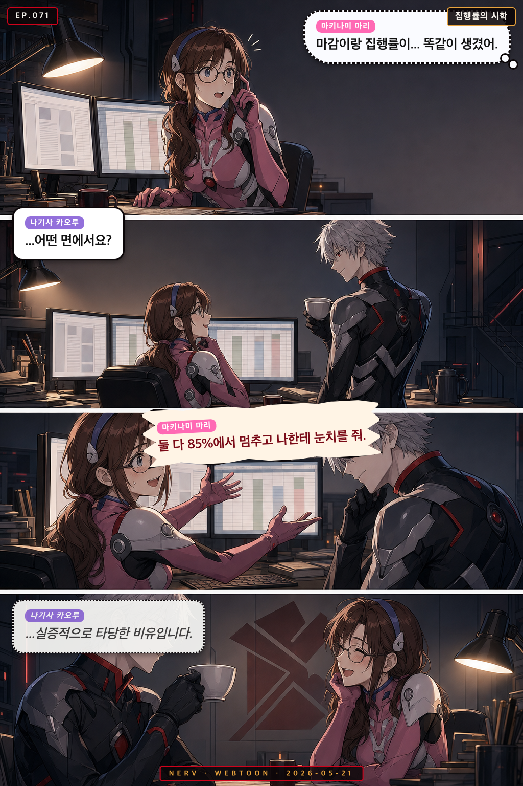
EP.071집행률의 시학
마리가 논문 마감과 예산 집행률이 묘하게 닮았다고 시적으로 표현하자, 카오루가 데이터로 조용히 동의한다
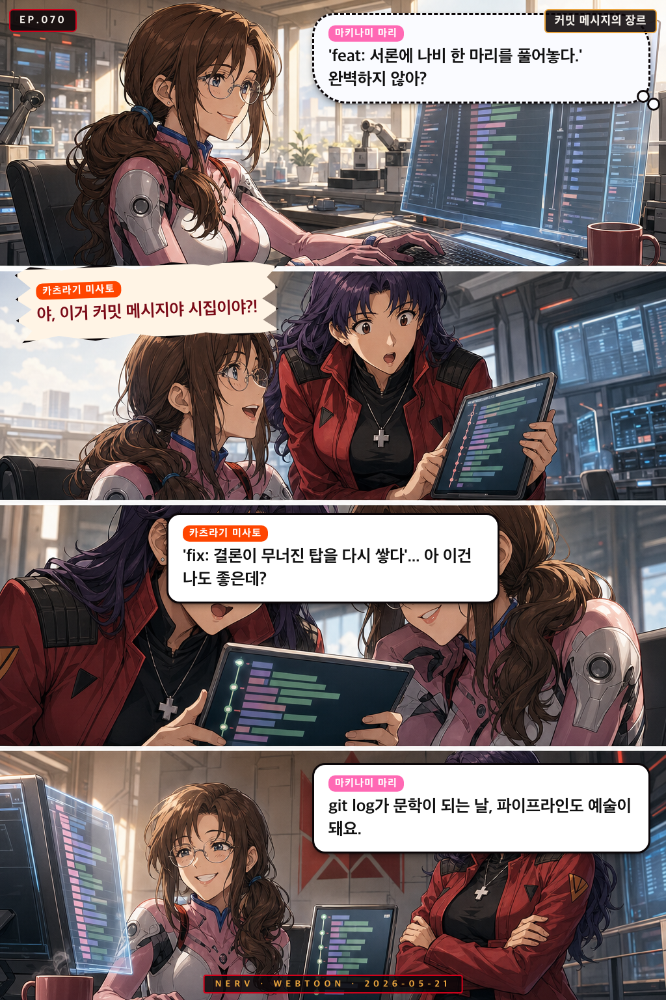
EP.070커밋 메시지의 장르
마리가 논문 작업 커밋 메시지를 문학적으로 쓰자 미사토가 파이프라인 로그에서 그걸 발견하고 감탄하는 아침
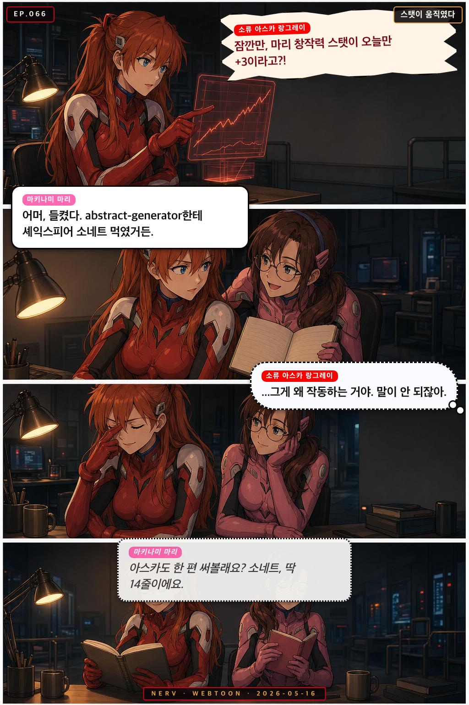
EP.066스탯이 움직였다
마리의 포토카드 스탯이 갑자기 올라간 걸 발견한 아스카가 이유를 추궁하다가 뜻밖의 훈훈함을 마주한다
 EP.061
EP.061
초고의 온도
마리가 아침 일찍 초고를 들고 레이에게 달려가지만, 레이의 반응은 언제나처럼 조용하고 깊다
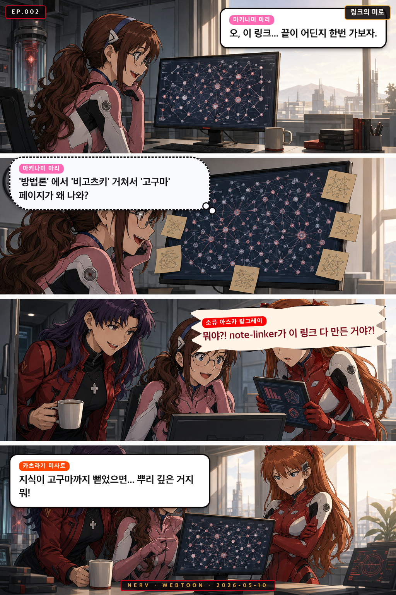
EP.054링크의 미로
마리가 Obsidian 위키 링크를 타고 들어갔다가 출구를 잃고, 아스카와 미사토가 각자의 방식으로 반응한다
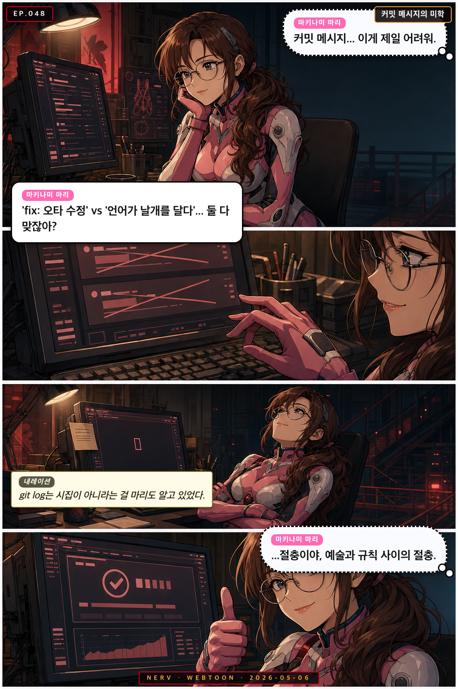
EP.048커밋 메시지의 미학
마리가 저녁에 git commit 메시지를 쓰다가 학술 산문과 시 사이에서 갈팡질팡한다
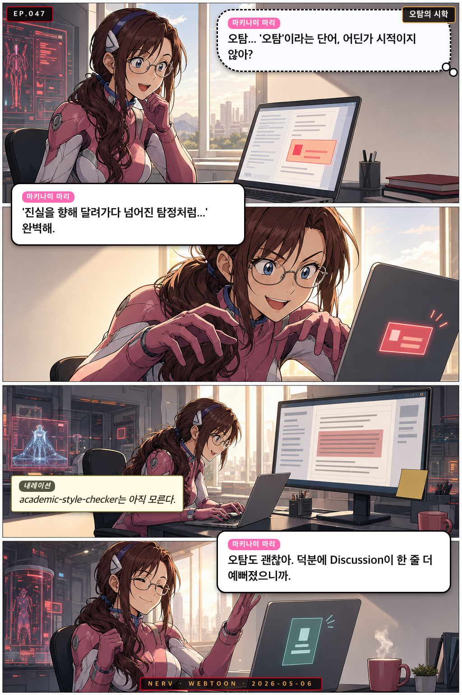
EP.047오탐의 시학
MAGI 순찰 알림이 울리자 마리는 오탐이라는 단어에서 시 한 편을 떠올리고, 결국 Discussion에 몰래 은유를 끼워 넣는다
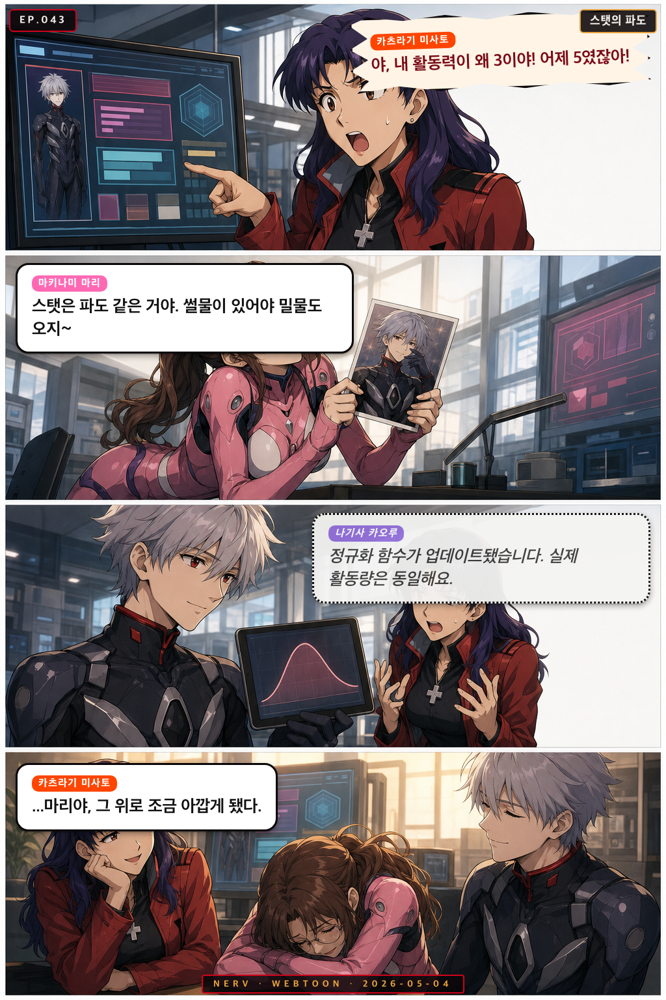
EP.043스탯의 파도
아침 포토카드 스탯이 갑자기 출렁이자 미사토가 패닉하고, 마리는 문학적으로 위로하며, 카오루가 조용히 진실을 밝힌다
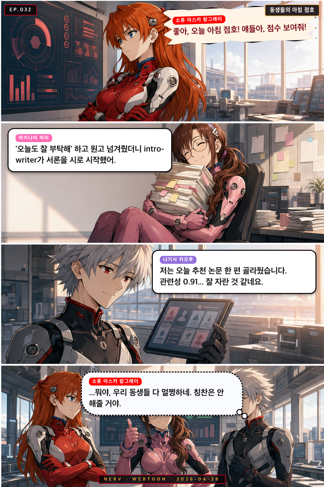
EP.032동생들의 아침 점호
아스카가 자기 에이전트들의 품질 점수를 아침부터 점검하자, 마리와 카오루도 각자의 방식으로 '동생들'을 챙긴다
 EP.029
EP.029
예정에 없던 저녁 수업
launchd가 한밤중에 갑자기 lecture-slide-maker를 깨우고, 신지는 당황하지만 레이와 마리는 각자의 방식으로 받아들인다
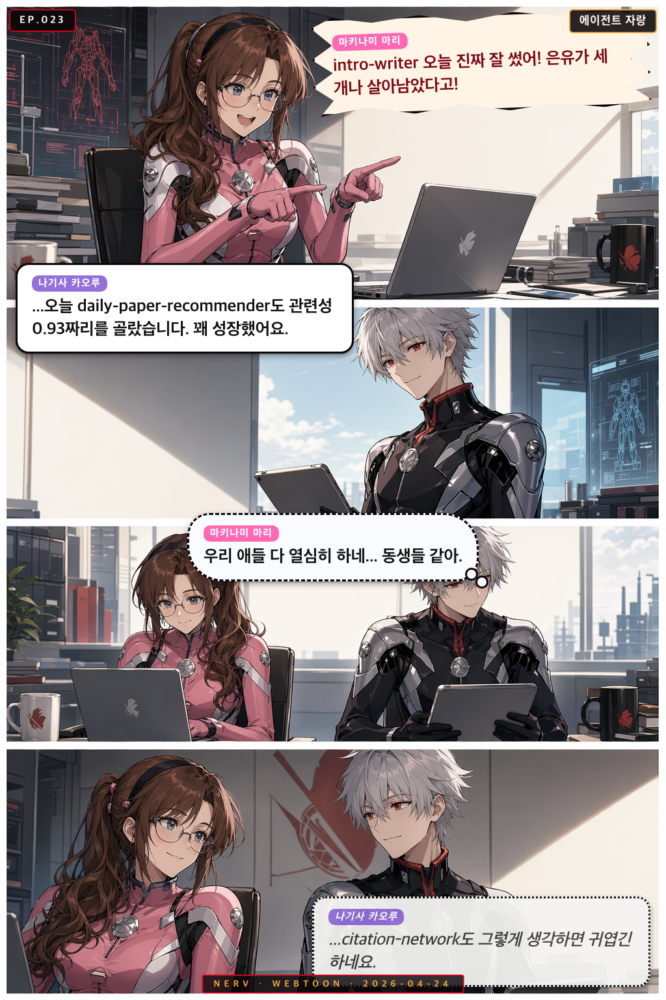
EP.023에이전트 자랑
마리가 자기 담당 에이전트들을 어린 동생처럼 칭찬하자, 카오루가 자신의 에이전트들도 조용히 꺼내 든다
 EP.020
EP.020
논문과 밤의 언어
심야 연구실에서 마리가 arXiv 추천 논문을 또 열어보다가 의외의 제목에 감탄하고, 신지가 그 논문이 강의에 쓸 수 있을지 조심스럽게 묻는다
 EP.019
EP.019
오늘의 두 번째 의외성
심야 연구실에서 마리가 arXiv 추천 논문을 또 열어보다가 어이없는 제목을 발견하고, 신지가 조심스럽게 그 논문의 의미를 꺼낸다
 EP.018
EP.018
오늘의 추천: 예상 밖
심야에 마리가 daily-paper-recommender의 추천 논문을 열어보다가 황당한 제목에 멈추고, 신지가 조심스럽게 읽어보더니 의외의 감상을 꺼낸다
 EP.001
EP.001
03시 17분의 시
마감 전날 밤 홀로 글을 쓰던 마리 앞에 launchd가 예상 밖 시간에 깨어난다. 카오루의 침착한 로그 분석이 따뜻한 반전을 부른다.